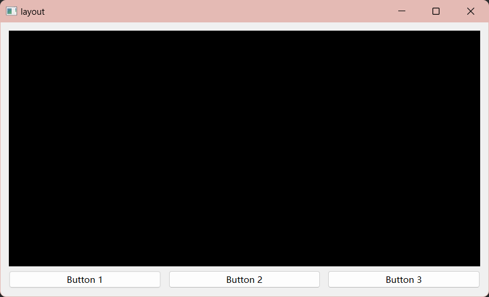

[8] Layout -- 布局管理器
1. 概述
Qt 提供了多种布局管理器，用于帮助你在窗口中排列和组织 QWidget 对象。以下是一些常用的布局管理器：
-
QHBoxLayout（水平布局）：
-
QHBoxLayout 水平布局将 QWidget 水平排列在一行中，从左到右。 - 适用于工具栏、按钮栏等水平排列的情况。
-
QVBoxLayout（垂直布局）：
-
QVBoxLayout 垂直布局将 QWidget 垂直排列在一列中，从上到下。 - 适用于垂直列表、表单等垂直排列的情况。
-
QGridLayout（网格布局）：
-
QGridLayout 允许你在一个网格中放置 QWidget，每个 QWidget 占用一个网格单元。 - 适用于需要在行和列中组织控件的情况，如表格、网格视图等。
-
QFormLayout（表单布局）：
-
QFormLayout 用于创建简单的表单，将标签和输入字段垂直排列在一列中。 - 适用于输入表单、设置对话框等场景。
-
QStackedLayout（堆叠布局）：
-
QStackedLayout 允许你在同一位置上叠放多个 QWidget，但只显示一个 QWidget，可以通过切换索引来显示不同的 QWidget。 - 适用于需要在同一位置切换显示不同页面或视图的情况。
-
QSplitter（分割器布局）：
-
QSplitter 允许你创建一个分割窗口，用户可以拖动分隔条来调整子部件的大小。 - 适用于需要可调整大小的窗格或面板的情况。
-
2. 水平布局 -- QHBoxLayout
控件处于一条水平线上，就是水平布局，比如：

接下来是如何使用水平布局的基本方法：
-
首先得创建一个窗口，创建一个 QWidget 作为窗口的主部件
-
然后加入其他部件（记得包含对应的头文件）
#include <QPushButton>
#include <QLabel>
QPushButton *button1 = new QPushButton("这是按钮1");
QPushButton *button2 = new QPushButton("这是按钮2");
QLabel *label = new QLabel("这是水平布局");
- 创建一个水平布局对象（也要包含头文件）：
#include <QHBoxLayout>
QHBoxLayout *horizontalLayout = new QHBoxLayout;
- 把控件加入水平布局：
horizontalLayout->addWidget(button1,1);
horizontalLayout->addWidget(button2,2);
horizontalLayout->addWidget(label,2);
- 设置主窗口的布局：
this->setLayout(horizontalLayout);
介绍一下addWidget方法：
addWidget 方法是 Qt 布局管理器类中的一个常用方法，用于将一个 QWidget（或其他可布局的对象）添加到布局中。该方法通常用于设置布局中的子部件，并控制它们的排列和布局方式。
下面是关于 addWidget 方法的基本信息和用法：
void QLayout::addWidget(QWidget *widget, int stretch = 0, Qt::Alignment alignment = Qt::Alignment())
-
widget：要添加到布局中的 QWidget 或其他可布局的对象。 -
stretch：控制子部件在布局中的拉伸因子。它是一个整数值，通常用于设置子部件的占比。默认值为0，表示不拉伸。 -
alignment：控制子部件在布局中的对齐方式，默认情况下为 Qt::Alignment()，表示无特殊对齐。
使用 addWidget 方法时，你可以将一个或多个子部件添加到布局中，并可选地为每个子部件指定拉伸因子和对齐方式。
还有其他方法：
setSpacing：设置所有控件之间的间距 -->setSpacing(int 间距)
setContentsMargins ：设置布局的边距，以控制布局与窗口边缘的距离-->setContentsMargins(int left, int top, int right, int bottom)
insertWidget ：可以在指定位置插入一个控件，和addWidget类似，只是多了一个指定位置参数。
removeWidget ：可以从布局中移除一个控件-->removeWidget(QWidget *widget)
addStretch：向布局中添加一个可伸展的空白区域，它通常用于控制布局中子部件的位置和对齐，一个参数：拉伸因子stretch
3.水平布局和垂直布局嵌套
垂直布局和水平布局一样，只是在垂直方向上进行布局，方法也是水平布局的方法。这里记录一下水平布局和垂直布局嵌套使用实现复杂布局：

// 创建一个垂直布局
QVBoxLayout *verticalLayout = new QVBoxLayout;
// 在垂直布局内添加一个水平布局
QHBoxLayout *horizontalLayout = new QHBoxLayout;
QPushButton *button1 = new QPushButton("Button 1");
QPushButton *button2 = new QPushButton("Button 2");
horizontalLayout->addWidget(button1);
horizontalLayout->addWidget(button2);
horizontalLayout->setSpacing(10);
// 添加水平布局到垂直布局
verticalLayout->addLayout(horizontalLayout);
// 创建其他控件并添加到垂直布局
QLabel *label = new QLabel("Label");
QPushButton *button3 = new QPushButton("Button 3");
verticalLayout->addWidget(label);
verticalLayout->addWidget(button3);
verticalLayout->setSpacing(10);
this->setLayout(verticalLayout);
嵌套的思路就是把一个布局当做一个控件添加到另一个布局。
4. 一个例子--从视频播放器那看到的
//实例化另一个子窗口
chiledwidget = new ChildWidget(this);
//创建布局
QVBoxLayout *display= new QVBoxLayout(this);
QHBoxLayout *buttons = new QHBoxLayout(this);
QPushButton *button1 = new QPushButton("Button 1");
QPushButton *button2 = new QPushButton("Button 2");
QPushButton *button3 = new QPushButton("Button 3");
buttons->addWidget(button1);
buttons->addWidget(button2);
buttons->addWidget(button3);
buttons->setSpacing(10);
display->addWidget(chiledwidget);
display->addLayout(buttons);
this->setLayout(display);

5. 其他布局
网格布局：
QGridLayout *gridLayout = new QGridLayout;
QPushButton *button1 = new QPushButton("Button 1");
QPushButton *button2 = new QPushButton("Button 2");
QPushButton *button3 = new QPushButton("Button 3");
gridLayout->addWidget(button1, 0, 0); // 将 button1 放在第一行第一列
gridLayout->addWidget(button2, 0, 1); // 将 button2 放在第一行第二列
gridLayout->addWidget(button3, 1, 0, 1, 2); // 将 button3 放在第二行第一列，并跨越两列
gridLayout->setRowStretch(0, 1); // 第一行伸展性为1
gridLayout->setColumnStretch(1, 2); // 第二列伸展性为2
gridLayout->setSpacing(10); // 设置控件之间的间距为10像素
this->setLayout(gridLayout);